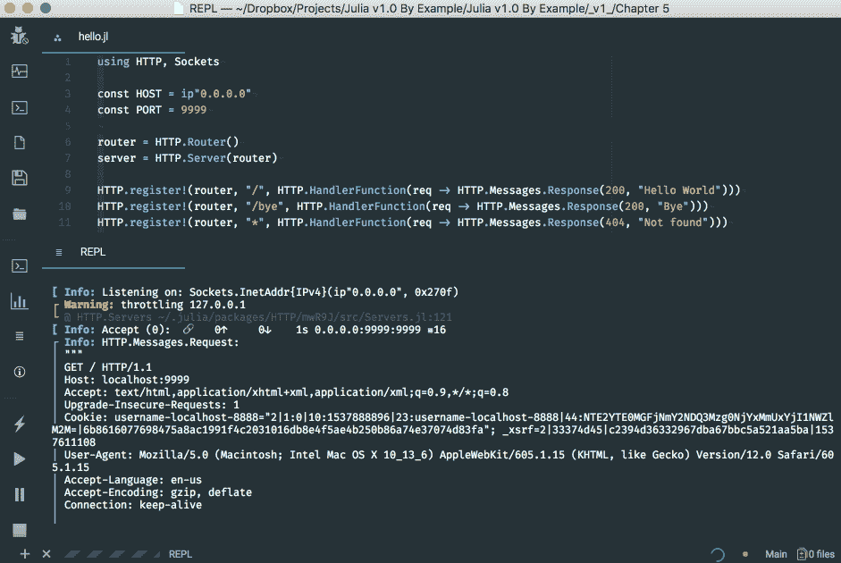
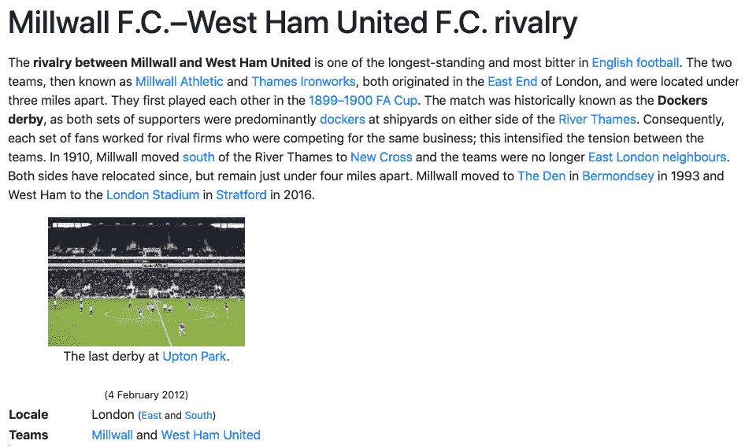
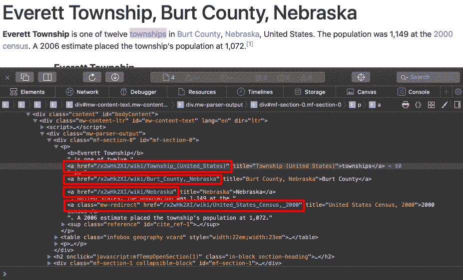
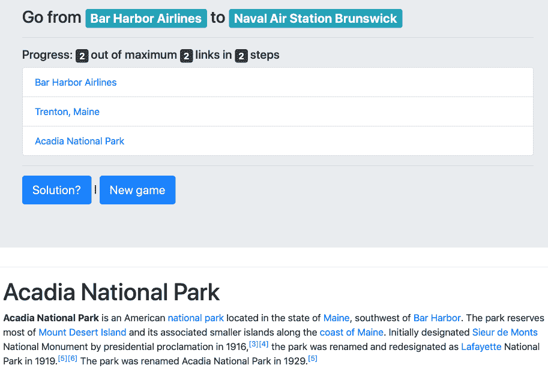

开发我们游戏的后端是一次很好的学习经历。这个强大的基础将很好地为我们服务——模块化方法将允许我们轻松地将读取-评估-打印循环 ( REPL) 应用程序转换为 web 应用程序，而当处理 Julia 的 web 堆栈及其丰富的分类法时，我们对类型的理解将被证明是无价的。
我们现在进入了游戏开发旅程的最后阶段——为维基百科的六度空间构建一个网络用户界面。因为构建一个全功能的 web 应用程序不是一件简单的事情，所以最后一部分将专门讨论这个任务。在此过程中，我们将了解以下主题:
这一章的结尾有一个很酷的奖励——我们的游戏已经准备好了，我们将玩几轮维基百科的六度游戏！
Julia 包生态系统正在不断发展，每天都有新的包版本发布。大多数时候这是好消息，因为新版本带来了新特性和错误修复。然而，由于许多软件包仍处于测试阶段(版本 0.x ),任何新版本都可能引入突破性的变化。因此，书中介绍的代码可能会停止工作。为了确保您的代码将产生与书中描述的相同的结果，建议使用相同的包版本。以下是本章中使用的外部软件包及其具体版本:
Cascadia@v0.4.0
Gumbo@v0.5.1
HTTP@v0.7.1
IJulia@v1.14.1
为了安装软件包的特定版本，您需要运行:
pkg> add PackageName@vX.Y.Z
例如:
pkg> add IJulia@v1.14.1
或者，您可以通过下载本章提供的Project.toml文件并使用pkg>实例化来安装所有使用的包，如下所示:
julia> download("https://raw.githubusercontent.com/PacktPublishing/Julia-Programming-Projects/master/Chapter05/Project.toml", "Project.toml")
pkg> activate .
pkg> instantiate
我们进入了项目的最后一个阶段——网络用户界面。让我们从讨论规范开始；在开始实施之前，我们需要制定蓝图。
玩家将从登录页面开始。这将显示规则，并提供启动新游戏的选项，允许用户选择难度级别。在这个起点之后，玩家将被重定向到新的游戏页面。在这里，考虑到选择的难度级别，我们将通过用我们在前一章写的算法获取文章来引导一个新的游戏会话。一旦我们选择了代表维基百科的六度的文章，我们将显示一个带有游戏目标的标题——开始和结束文章的标题。我们还将显示第一篇文章的内容，从而启动游戏。当玩家点击这篇文章中的链接时，我们必须相应地检查玩家是否找到了文章的结尾并赢得了游戏。如果没有，则呈现新文章并增加所采取的步骤数。
我们还需要一个区域来显示游戏的进度——在当前会话中查看的文章，总共进行了多少步，以及一种导航形式，允许玩家在发现自己走错路时返回并重新思考他们的选择。因此，我们需要存储玩家的导航历史。最后，提供一个解决谜题的选项会很好——当然，结果是玩家会输掉游戏。
规范中非常重要的一点是，在无状态浏览器请求和服务器响应之间，在浏览 Wikipedia 文章时，我们需要某种机制来维护游戏的状态，也就是说，检索游戏及其相应的数据—难度、路径(文章)和进度、导航历史、采取的步骤数等等。这将通过在每个游戏会话开始时创建一个唯一的游戏标识符来实现，并将它作为 URL 的一部分与每个请求一起传递。
Julia 的包生态系统长期以来为构建 web 应用程序提供了各种各样的库。一些最成熟的是HttpServer、Mux、WebSockets和JuliaWebAPI(仅举几例；该列表并不详尽)。但是随着生态系统随着 Julia 版本 1 的出现而稳定下来，大量的社区努力被放入一个更新的包中，简称为HTTP。它提供了一个 web 服务器、一个 HTTP 客户端(我们已经在前面的章节中使用它从 Wikipedia 获取网页)，以及各种用于简化 web 开发的工具。我们将学习关键的HTTP模块，如Server、Router、Request、Response和HandlerFunction，我们将很好地使用它们。
让我们看一个使用HTTP服务器堆栈的简单例子。这将有助于我们理解在网络上展示我们的游戏这一更复杂的问题之前的基本构建模块。
如果您遵循上一章，您应该已经安装了HTTP包。如果没有，你知道茱莉亚的《REPL》中的演练。
现在，在您计算机的某个地方，创建一个名为hello.jl的新文件。因为这将是一个包含在一个文件中的简单软件，所以没有必要定义一个模块。这是完整的代码，整整八行，非常精彩。我们接下来会讨论它们:
using HTTP, Sockets
const HOST = ip"0.0.0.0"
const PORT = 9999
router = HTTP.Router()
server = HTTP.Server(router)
HTTP.register!(router, "/", HTTP.HandlerFunction(req -> HTTP.Messages.Response(200, "Hello World")))
HTTP.register!(router, "/bye", HTTP.HandlerFunction(req -> HTTP.Messages.Response(200, "Bye")))
HTTP.register!(router, "*", HTTP.HandlerFunction(req -> HTTP.Messages.Response(404, "Not found")))
HTTP.serve(server, HOST, PORT)
使用HTTP处理 web 请求的工作流需要四个实体— Server、Router、HandlerFunction和Response。
我们从最简单的部分开始分析代码，在最后一行，我们通过调用HTTP.serve来启动我们的服务器。serve函数接受一个server，一个类型为Server的对象，加上HOST信息(一个 IP 字符串)和PORT(一个整数)作为参数，用于附加和监听请求。我们已经将文件顶部的HOST和PORT定义为常量。使用非标准的ip""字符串来定义HOST的值。在讨论String类型时，我们了解了非标准字符串文字。在这方面，ip"..."符号类似于正则表达式(r"...")、版本字符串(v"...")或Pkg命令(pkg"...")。
实例化一个新的Server需要一个Router对象，我们将其命名为router。Router的工作是注册链接(URIs)和 Julia 函数(称为HandlerFunctions)之间的映射列表(称为 routes ),链接由我们的应用程序在互联网上公开，Julia 函数提供响应。我们已经使用register!函数设置了路线，传递了router对象、URI 结构(如/或/bye)和相应的HandlerFunction对象作为参数。
现在，如果你查看HandlerFunction的主体，你会看到根页面/将显示字符串"Hello World"；/bye URL 将显示字符串"Bye"；最后，每隔一个 URI，由星号*表示，将返回一个"Not found"文本，伴随着正确的404 Not Found头。
我确信你现在能认出箭头操作符，暗示了 lambdas 的使用。每个HandlerFunction构造函数接受一个匿名函数。该函数负责处理请求并生成适当的Response。作为它的参数，它接受Request对象(名为req)，并期望返回一个Response的实例。
在我们的示例代码中，我们使用两个可用的 HTTP 状态代码构建了三个Response对象(200表示OK和404表示未找到页面)，外加一些字符串作为响应的主体(分别是简单的字符串"Hello World"、"Bye"和"Not found")。
最后，当服务器收到请求时，它将请求委托给路由器，路由器将请求的 URI 匹配到最合适的映射 URI 模式，并调用相应的HandlerFunction，将Request作为参数传入。处理函数返回一个Response对象，由服务器发送回客户端。
让我们看看它的实际效果。您可以在编辑器中使用Run功能，也可以在终端中执行$ julia hello.jl。或者，您可以运行本章附带的 IJulia 笔记本中的代码:

前面的屏幕截图显示了在 Juno 中运行的hello.jl文件。当接收和处理请求时,“REPL”窗格显示来自 web 服务器的调试信息。
一旦服务器准备就绪，您将收到一条日志消息，说明服务器正在监听指定的套接字。此时，您可以打开网络浏览器并导航至http://localhost:9999。你会收到著名的 Hello World 消息，如下所示:
祝贺您，我们刚刚与 Julia 一起开发了我们的第一个 web 应用程序！
不需要猜测导航到http://localhost:9999/bye时会发生什么。
最后，您可以通过尝试导航到http://localhost:9999下的任何其他链接来确认任何其他请求将导致一个404 Not Found页面——例如，http://localhost:9999/oh/no:

这里是未找到页面，正确返回404状态代码。
请启动你最喜欢的 Julia 编辑器，打开我们在上一章用过的sixdegrees/文件夹。它应该包含我们已经处理过的所有文件— six_degrees.jl，加上Articles、Database、Gameplay和Wikipedia模块。
如果到目前为止您还没有完成代码，您可以下载本章附带的支持文件，这些文件可以从https://github . com/packt publishing/Julia-Programming-Projects/tree/master/chapter 05获得。
为我们的 web 应用程序添加新文件。由于这次代码会更复杂，并且应该与我们的其余模块集成，让我们在一个新的WebApp.jl文件中定义一个WebApp模块。然后，我们可以添加前几行代码:
module WebApp using HTTP, Sockets const HOST = ip"0.0.0.0" const PORT = 8888 const ROUTER = HTTP.Router() const SERVER = HTTP.Server(ROUTER) HTTP.serve(SERVER, HOST, PORT) end
这并不奇怪——与前面的例子相似，我们为HOST和PORT定义了常数，然后实例化了一个Router和一个Server并开始监听请求。代码应该工作得很好，但是不值得运行它，因为它不会做任何有用的事情。我们需要定义和注册我们的路线，然后设置生成游戏页面的处理函数。
通过回顾我们在本章开始时定义的高级规范，我们可以确定以下几页:
考虑到路由处理程序会相当复杂，我们最好不要用路由定义来定义它们。相反，我们将使用单独定义的函数。我们的路线定义将如下所示——请将它们添加到WebApp模块，如下所示:
HTTP.register!(ROUTER, "/", landingpage) # root page HTTP.register!(ROUTER, "/new/*", newgamepage) # /new/$difficulty_level -- new game HTTP.register!(ROUTER, "/*/wiki/*", articlepage) # /$session_id/wiki/$wikipedia_article_url -- article page HTTP.register!(ROUTER, "/*/back/*", backpage) # /$session_id/back/$number_of_steps -- go back the navigation history HTTP.register!(ROUTER, "/*/solution", solutionpage) # /$session_id/solution -- display the solution HTTP.register!(ROUTER, "*", notfoundpage) # everything else -- not found
你可能想知道 URI 图案前面多出来的*是什么。我们说过，我们需要一种方法来识别无状态 web 请求之间正在运行的游戏会话。articlepage、backpage和solutionpage功能都需要现有的游戏会话。我们将传递这个会话 ID 作为 URL 的第一部分。实际上，它们的路径被解释为/$session_id/wiki/*、/$session_id/back/*和/$session_id/solution，其中$session_id变量代表唯一的游戏标识符。至于拖尾的*，对于不同的路线代表不同的东西——在new的情况下，就是游戏的难度等级；对于articlepage，它是实际的维基百科 URL，也是我们的文章标识符；对于backpage，它代表导航栈中的索引。类似于正则表达式，对于路径匹配，*将匹配任何内容。如果这听起来很复杂，不要担心——查看并运行代码会让事情变得清楚。
让我们为每个处理函数添加占位符定义—请将这些添加到路线列表的之前:
const landingpage = HTTP.HandlerFunction() do req end
const newgamepage = HTTP.HandlerFunction() do req end
const articlepage = HTTP.HandlerFunction() do req end
const backpage = HTTP.HandlerFunction() do req end
const solutionpage = HTTP.HandlerFunction() do req end
const notfoundpage = HTTP.HandlerFunction() do req end
马上，我们可以解决登陆页面处理器。它需要做的只是显示一些描述游戏规则的静态内容，以及提供一种开始不同难度的新游戏的方法。记住游戏的难度决定了文章链的长度，我们在开始一个新游戏的时候需要这些信息。我们可以将它作为 URL 的一部分传递给新的游戏页面，格式为/new/$difficulty_level。难度等级已经在Gameplay模块中定义了，所以不要忘记声明我们是using Gameplay。
考虑到这一点，我们将以下面的代码结束我们的WebApp模块。我们把所有的东西放在一起，我们还添加了landingpage HandlerFunction。这与第一条路线——HTTP.register!(ROUTER, "/",landingpage)相关。这意味着当我们在浏览器中访问/路由时，将执行 landingpage HandlerFunction并将其输出作为响应返回。在这种情况下，我们只是返回一堆 HTML 代码。如果你不熟悉 HTML，这里是标记的作用——我们包含了 Twitter Bootstrap CSS 主题以使我们的页面更漂亮，我们显示了几段解释游戏规则的文本，我们显示了三个开始新游戏的按钮——每个难度级别一个按钮。
代码如下:
module WebApp
using HTTP, Sockets
using ..Gameplay
# Configuration
const HOST = ip"0.0.0.0"
const PORT = 8888
const ROUTER = HTTP.Router()
const SERVER = HTTP.Server(ROUTER)
# Routes handlers
const landingpage = HTTP.HandlerFunction() do req
html = """
<!DOCTYPE html>
<html>
<head>
<meta charset="utf-8" />
<link rel="stylesheet" href="https://stackpath.bootstrapcdn.com/bootstrap/4.1.3/css/bootstrap.min.css" integrity="sha384-MCw98/SFnGE8fJT3GXwEOngsV7Zt27NXFoaoApmYm81iuXoPkFOJwJ8ERdknLPMO" crossorigin="anonymous">
<title>6 Degrees of Wikipedia</title>
</head>
<body>
<div class="jumbotron">
<h1>Six degrees of Wikipedia</h1>
<p>
The goal of the game is to find the shortest path between two random Wikipedia articles.<br/>
Depending on the difficulty level you choose, the Wiki pages will be further apart and less related.<br/>
If you can't find the solution, you can always go back up the articles chain, but you need to find the solution within the maximum number of steps, otherwise you lose.<br/>
If you get stuck, you can always check the solution, but you'll lose.<br/>
Good luck and enjoy!
</p>
<hr class="my-4">
<div>
<h4>New game</h4>
<a href="/new/$(Gameplay.DIFFICULTY_EASY)" class="btn btn-primary btn-lg">Easy ($(Gameplay.DIFFICULTY_EASY) links away)</a> |
<a href="/new/$(Gameplay.DIFFICULTY_MEDIUM)" class="btn btn-primary btn-lg">Medium ($(Gameplay.DIFFICULTY_MEDIUM) links away)</a> |
<a href="/new/$(Gameplay.DIFFICULTY_HARD)" class="btn btn-primary btn-lg">Hard ($(Gameplay.DIFFICULTY_HARD) links away)</a>
</div>
</div>
</body>
</html>
"""
HTTP.Messages.Response(200, html)
end
const newgamepage = HTTP.HandlerFunction() do req
end
const articlepage = HTTP.HandlerFunction() do req
end
const backpage = HTTP.HandlerFunction() do req
end
const solutionpage = HTTP.HandlerFunction() do req
end
const notfoundpage = HTTP.HandlerFunction() do req
end
# Routes definitions
HTTP.register!(ROUTER, "/", landingpage) # root page
HTTP.register!(ROUTER, "/new/*", newgamepage) # /new/$difficulty_level -- new game
HTTP.register!(ROUTER, "/*/wiki/*", articlepage) # /$session_id/wiki/$wikipedia_article_url -- article page
HTTP.register!(ROUTER, "/*/back/*", backpage) # /$session_id/back/$number_of_steps -- go back the navigation history
HTTP.register!(ROUTER, "/*/solution", solutionpage) # /$session_id/solution -- display the solution
HTTP.register!(ROUTER, "*", notfoundpage) # everything else -- not found
# Start server
HTTP.serve(SERVER, HOST, PORT)
end
让我们更新six_degrees.jl文件来引导我们的 web 应用程序。请确保它现在显示如下:
using Pkg
pkg"activate ."
include("Database.jl")
include("Wikipedia.jl")
include("Gameplay.jl")
include("WebApp.jl")
using .Wikipedia, .Gameplay, .WebApp
在编辑器或终端($ julia six_degrees.jl)中使用您喜欢的方法运行six_degrees.jl。寻找消息Info: Listening on:...，它通知我们 web 服务器已经启动。在您的浏览器中访问http://localhost:8888/，在我们的登录页面上尽情享受吧！我相信您会注意到包含 Twitter Bootstrap CSS 文件的效果——只需在我们的代码中添加几个 CSS 类就能产生巨大的视觉冲击！

前面的截图是我们的游戏在本地主机8888端口运行的登陆页面。
太棒了。现在，让我们来关注开始一个新游戏的功能。这里，我们需要实现以下步骤:
接下来我们将看看所有这些步骤。
这是第一步。记住，在我们的HandlerFunction中，我们可以访问Request对象req。所有的Request对象都公开了一个名为target的字段，该字段引用请求的 URL。target不包含协议或域名，因此它将采用/new/$difficulty_level的形式。提取$difficulty_level值的一个快速方法是简单地用一个空字符串""替换 URI 的第一部分，有效地删除它。结果将在函数newgamesession中使用，以创建指定难度的新游戏。输入代码，它看起来像这样:
game = parse(UInt8, (replace(req.target, "/new/"=>""))) |> newgamesession
因为我们用整数(文章的数量)来表示难度级别，所以在使用之前，我们将字符串解析为一个整数(特别是类型UInt8)。
开始新的游戏会话是第二步。游戏会话管理器，应该包括前面的newgamesession功能，已经完全消失了，所以是时候添加了。我们将游戏会话表示为相应类型的实例。让我们将type定义和操作它的方法打包到一个专用模块中。我们可以将模块命名为GameSession，将类型命名为Game。请在"sixdegrees/"文件夹中创建GameSession.jl文件。
我们的Game类型将需要一个定制的构造函数。我们将提供难度级别，构造函数将负责设置所有的内部内容——它将使用之前创建的Gameplay.newgame函数获取正确数量的维基百科文章；它将创建一个唯一的游戏 ID(这将是我们的会话 ID)；它会用默认值初始化其余的字段。
第一次尝试如下所示:
module GameSession
using ..Gameplay, ..Wikipedia, ..Wikipedia.Articles
using Random
mutable struct Game
id::String
articles::Vector{Article}
history::Vector{Article}
steps_taken::UInt8
difficulty::UInt8
Game(game_difficulty) =
new(randstring(), newgame(game_difficulty), Article[], 0, game_difficulty)
end
const GAMES = Dict{String,Game}()
end
Random.randstring函数创建一个随机字符串。这是我们游戏和会话的 ID。
我们还定义了一个GAMES字典，它将存储所有活动的游戏，并允许我们通过它们的id字段来查找它们。请记住，我们的游戏是在网络上公开的，所以我们将有多个游戏会话并行运行。
我们现在可以添加其余的功能。在模块关闭end前增加如下定义:
export newgamesession, gamesession, destroygamesession function newgamesession(difficulty) game = Game(difficulty) GAMES[game.id] = game
game end
function gamesession(id) GAMES[id] end
function destroygamesession(id) delete!(GAMES, id) end newgamesession function, which creates a new Game of the indicated difficulty and stores it into the GAMES dict data structure. There's also a getter function, gamesession, which retrieves a Game by id. Finally, we add a destructor function, which removes the corresponding Game from the GAMES dict, effectively making it unavailable on the frontend and leaving it up for garbage collection. All of these functions are exported.
值得注意的是，在内存中存储我们的游戏对于这个学习项目来说是没问题的，但是在生产中，有很多玩家，你可能会很快耗尽内存。对于生产使用，我们最好将每个Game保存到数据库中，并在必要时检索它。
这是第三步。回到我们的WebApp模块(在WebApp.jl中)，让我们继续讨论newgamepage处理程序的逻辑。实现将如下所示:
using ..GameSession, ..Wikipedia, ..Wikipedia.Articles const newgamepage = HTTP.HandlerFunction() do req game = parse(UInt8, (replace(req.target, "/new/"=>""))) |> newgamesession article = game.articles[1] push!(game.history, article) HTTP.Messages.Response(200, wikiarticle(article)) end
一旦我们创建了一个新游戏，我们需要引用它的第一篇文章。我们将起始文章添加到游戏历史中，然后使用下面的wikiarticle函数将其呈现为 HTML:
function wikiarticle(article)
html = """
<!DOCTYPE html>
<html>
<head>
<meta charset="utf-8" />
<link rel="stylesheet" href="https://stackpath.bootstrapcdn.com/bootstrap/4.1.3/css/bootstrap.min.css" integrity="sha384-MCw98/SFnGE8fJT3GXwEOngsV7Zt27NXFoaoApmYm81iuXoPkFOJwJ8ERdknLPMO" crossorigin="anonymous">
<title>6 Degrees of Wikipedia</title>
</head>
<body>
<h1>$(article.title)</h1>
<div id="wiki-article">
$(article.content)
</div>
</body>
</html>
"""
end
我们只是将维基百科文章的标题显示为主要标题，然后是内容。
最后，不要忘记通过将GameSession添加到"six_degrees.jl"来将其加载到我们的应用程序中。请注意，它需要在WebApp之前加载，才能用于WebApp。完整的"six_degrees.jl"文件现在应该是这样的:
using Pkg pkg"activate ." include("Database.jl") include("Wikipedia.jl") include("Gameplay.jl") include("GameSession.jl") include("WebApp.jl") using .Wikipedia, .Gameplay, .GameSession, .WebApp
如果您重新运行我们的代码并导航到http://localhost:8888/new/2，您将看到我们的应用程序呈现了一篇随机的维基百科文章:

这是一个好的开始，但也存在一些问题。首先，我们从维基百科获取内容时有点过于贪婪。它包括整个页面的 HTML，其中包含了我们并不真正需要的东西，比如看不见的<head>部分，以及文章正文上方非常明显的维基百科内容(搜索表单、菜单等等)。这很容易解决——我们所需要做的就是通过使用一个更好定义的 CSS 选择器来更具体地描述我们想要的内容。稍微摆弄一下浏览器的检查器，就会发现想要的选择器是#bodyContent。
有了这些知识，我们需要更新Wikipedia模块。请用此功能替换现有的articleinfo功能:
function articleinfo(content) dom = articledom(content) (extractcontent(dom.root), extractlinks(dom.root), extracttitle(dom.root), extractimage(dom.root)) end
我们现在将只提取所需 CSS 选择器的内容，而不是使用整个 HTML:
function extractcontent(elem)
matchFirst(Selector("#bodyContent"), elem) |> string
end
请将extractcontent的定义添加到Wikipedia.jl文件中，在extractimage功能下。
通过在http://localhost:8888/new/2重新访问我们的页面，我们将看到我们的努力得到了更好看的替换:

好吧，这并不难！但是下一个问题更难。第四步是所有关于设置。我们确定，我们需要捕捉所有的内部维基百科链接，以便当玩家点击一个链接时，他们会被带到我们的应用程序，而不是去原始的维基百科文章。这项工作有一半是由维基百科的内容本身完成的，因为它使用了相对 URL。也就是说，它没有使用https://en.wikipedia.org/wiki/Wikipedia:Six_degrees_of_Wikipedia形式的绝对 URL，而是使用了相对形式/wiki/Wikipedia:Six_degrees_of_Wikipedia。这意味着当在浏览器中呈现时，这些链接将继承当前主机的域名(或基 URL )。也就是说，当在http://localhost:8888/呈现维基百科文章的内容时，其相对 URL 将被解释为http://localhost:8888/wiki/Wikipedia:Six_degrees_of_Wikipedia。因此，它们会自动指向我们的 web 应用程序。这很好，但是缺少了一大块拼图:我们说过要通过将会话 id 作为 URL 的一部分来维护游戏的状态。因此，我们的 URL 应该是http://localhost:8888/ABCDEF/wiki/Wikipedia:Six_degrees_of_Wikipedia的形式，其中ABCDEF代表游戏(或会话)ID。最简单的解决方法就是在渲染内容的时候用/ABCDEF/wiki/代替/wiki/——当然是用实际的游戏 ID 代替ABCDEF。
在WebApp.wikiarticle函数的定义中，请查找:
<div id="wiki-article">
$(article.content)
</div>
将其替换为以下内容:
<div id="wiki-article">
$(replace(article.content, "/wiki/"=>"/$(game.id)/wiki/"))
</div>
因为我们现在需要game对象，我们必须确保将它传递给函数，所以它的声明应该如下所示:
function wikiarticle(game, article)
这意味着我们还需要更新newgamepage路由处理程序，以正确调用更新后的wikiarticle函数。WebApp.newgamepage函数的最后一行现在应该如下:
HTTP.Messages.Response(200, wikiarticle(game, article))
如果您执行six_degrees.jl并打开浏览器http://localhost:8888/new/2，您应该会看到一篇很好的维基百科文章的渲染图，其中所有的内部链接都包含游戏 ID:

在前面的截图中，我们可以看到所有的网址都以/x2wHk2XI开头——我们的游戏 ID。
对于规范的第五部分，也是最后一部分，我们需要显示关于游戏的信息，并提供一种导航回以前文章的方法。我们将定义以下函数:
function objective(game)
"""
<h3>
Go from <i>$(game.articles[1].title)</i>
to <i>$(game.articles[end].title)</i>
</h3>
<h5>
Progress: $(size(game.history, 1) - 1)
out of maximum $(size(game.articles, 1) - 1) links
in $(game.steps_taken) steps
</h5>
<h6>
<a href="/$(game.id)/solution">Solution?</a> |
<a href="/">New game</a>
</h6>"""
end
objective功能通知玩家文章的开始和结束以及当前的进度。它还提供了一个小菜单，以便您可以查看解决方案或开始一个新游戏。
为了向后导航，我们需要生成游戏历史链接:
function history(game)
html = "<ol>"
iter = 0
for a in game.history
html *= """
<li><a href="/$(game.id)/back/$(iter + 1)">$(a.title)</a></li>
"""
iter += 1
end
html * "</ol>"
end
最后，我们需要一些额外的逻辑来检查游戏是赢了还是输了:
function puzzlesolved(game, article) article.url == game.articles[end].url end
如果当前文章的 URL 与游戏中最后一篇文章的 URL 相同，我们就有了赢家。
如果玩家用完了所有招式，游戏就输了:
function losinggame(game) game.steps_taken >= Gameplay.MAX_NUMBER_OF_STEPS end
到目前为止，完整的代码应该是这样的:
module WebApp
using HTTP, Sockets
using ..Gameplay, ..GameSession, ..Wikipedia, ..Wikipedia.Articles
# Configuration
const HOST = ip"0.0.0.0"
const PORT = 8888
const ROUTER = HTTP.Router()
const SERVER = HTTP.Server(ROUTER)
# Functions
function wikiarticle(game, article)
html = """
<!DOCTYPE html>
<html>
$(head())
<body>
$(objective(game))
$(history(game))
<hr/>
$(
if losinggame(game)
"<h1>You Lost :( </h1>"
else
puzzlesolved(game, article) ? "<h1>You Won!</h1>" : ""
end
)
<h1>$(article.title)</h1>
<div id="wiki-article">
$(replace(article.content, "/wiki/"=>"/$(game.id)/wiki/"))
</div>
</body>
</html>
"""
end
function history(game)
html = "<ol>"
iter = 0
for a in game.history
html *= """
<li><a href="/$(game.id)/back/$(iter + 1)">$(a.title)</a></li>
"""
iter += 1
end
html * "</ol>"
end
function objective(game)
"""
<h3>
Go from <i>$(game.articles[1].title)</i>
to <i>$(game.articles[end].title)</i>
</h3>
<h5>
Progress: $(size(game.history, 1) - 1)
out of maximum $(size(game.articles, 1) - 1) links
in $(game.steps_taken) steps
</h5>
<h6>
<a href="/$(game.id)/solution">Solution?</a> |
<a href="/">New game</a>
</h6>"""
end
function head()
"""
<head>
<meta charset="utf-8" />
<link rel="stylesheet" href="https://stackpath.bootstrapcdn.com/bootstrap/4.1.3/css/bootstrap.min.css" integrity="sha384-MCw98/SFnGE8fJT3GXwEOngsV7Zt27NXFoaoApmYm81iuXoPkFOJwJ8ERdknLPMO" crossorigin="anonymous">
<title>6 Degrees of Wikipedia</title>
</head>
"""
end
function puzzlesolved(game, article)
article.url == game.articles[end].url
end
function losinggame(game)
game.steps_taken >= Gameplay.MAX_NUMBER_OF_STEPS
end
# Routes handlers
const landingpage = HTTP.HandlerFunction() do req
html = """
<!DOCTYPE html>
<html>
$(head())
<body>
<div class="jumbotron">
<h1>Six degrees of Wikipedia</h1>
<p>
The goal of the game is to find the shortest path between two random Wikipedia articles.<br/>
Depending on the difficulty level you choose, the Wiki pages will be further apart and less related.<br/>
If you can't find the solution, you can always go back up the articles chain, but you need to find the solution within the maximum number of steps, otherwise you lose.<br/>
If you get stuck, you can always check the solution, but you'll lose.<br/>
Good luck and enjoy!
</p>
<hr class="my-4">
<div>
<h4>New game</h4>
<a href="/new/$(Gameplay.DIFFICULTY_EASY)" class="btn btn-primary btn-lg">Easy ($(Gameplay.DIFFICULTY_EASY) links away)</a> |
<a href="/new/$(Gameplay.DIFFICULTY_MEDIUM)" class="btn btn-primary btn-lg">Medium ($(Gameplay.DIFFICULTY_MEDIUM) links away)</a> |
<a href="/new/$(Gameplay.DIFFICULTY_HARD)" class="btn btn-primary btn-lg">Hard ($(Gameplay.DIFFICULTY_HARD) links away)</a>
</div>
</div>
</body>
</html>
"""
HTTP.Messages.Response(200, html)
end
const newgamepage = HTTP.HandlerFunction() do req
game = parse(UInt8, (replace(req.target, "/new/"=>""))) |> newgamesession
article = game.articles[1]
push!(game.history, article)
HTTP.Messages.Response(200, wikiarticle(game, article))
end
const articlepage = HTTP.HandlerFunction() do req
end
const backpage = HTTP.HandlerFunction() do req
end
const solutionpage = HTTP.HandlerFunction() do req
end
const notfoundpage = HTTP.HandlerFunction() do req
end
# Routes definitions
HTTP.register!(ROUTER, "/", landingpage) # root page
HTTP.register!(ROUTER, "/new/*", newgamepage) # /new/$difficulty_level -- new game
HTTP.register!(ROUTER, "/*/wiki/*", articlepage) # /$session_id/wiki/$wikipedia_article_url -- article page
HTTP.register!(ROUTER, "/*/back/*", backpage) # /$session_id/back/$number_of_steps -- go back the navigation history
HTTP.register!(ROUTER, "/*/solution", solutionpage) # /$session_id/solution -- display the solution HTTP.register!(ROUTER, "*", notfoundpage) # everything else -- not found # Start server HTTP.serve(SERVER, HOST, PORT)
end
请注意，我们还重构了页面的<head>，将其抽象为head函数，由landingpage和wikiarticle共同使用。这样，我们保持代码干燥，避免相同的<head> HTML 元素的重复。
现在，让我们确保将Gameplay.MAX_NUMBER_OF_STEPS添加到Gameplay.jl中。把它加在顶部，难度常数下面:
const MAX_NUMBER_OF_STEPS = 10
玩家已经阅读了起始文章并点击了内容中的链接。我们需要添加呈现链接文章的逻辑。我们必须获取文章(如果已经获取，则从数据库中读取)，显示它，并更新游戏的状态。
代码如下:
const articlepage = HTTP.HandlerFunction() do req uri_parts = parseuri(req.target) game = gamesession(uri_parts[1]) article_uri = "/wiki/$(uri_parts[end])"
existing_articles = Articles.find(article_uri) article = isempty(existing_articles) ? persistedarticle(fetchpage(article_uri)...) : existing_articles[1]
push!(game.history, article) game.steps_taken += 1
puzzlesolved(game, article) && destroygamesession(game.id)
HTTP.Messages.Response(200, wikiarticle(game, article)) end
我们从解析Request URI 开始，提取通过 GET 发送的所有值。格式为/$session_id/wiki/$article_name的字符串，例如/c701b1b0b1/wiki/Buenos_Aires。我们想把它分解成各个部分。由于这是一个我们需要多次执行的操作，我们将把这个功能抽象到parseuri函数中:
function parseuri(uri) map(x -> String(x), split(uri, "/", keepempty = false)) end
这里，我们使用 Julia 的split函数将 URI 字符串分解成SubString的一个Array，对应于正斜杠/之间的段。然后，我们将得到的SubString的Array转换为String的Array，返回并存储在uri_parts变量中。
继续定义articlepage处理程序，我们使用uri_parts数组的第一个元素，对应于会话 ID，通过调用gamesession(uri_parts[1])来检索我们的游戏对象。使用最后一个元素，我们生成了维基百科文章的 URL。然后，我们通过 URL 查找文章，或者从数据库检索，或者从网站获取。
一旦我们有了文章，我们就把它添加到游戏的历史中，并增加game.steps_taken计数器。然后，我们检查我们是否应该以胜利结束游戏:

这是获奖文章页面截图。设计并不伟大，但胜利的甜蜜滋味绝对伟大！
最后，类似于新游戏页面，我们通过渲染文章和所有游戏信息来响应。
请记住，后退导航 URL 类似于/c701b1b0b1/back/1，其中第一部分是会话 ID，最后一部分是历史堆栈中该项目的索引。要实现它，工作流程类似于articlepage—我们解析Request URI，通过会话 ID 检索游戏，并从游戏的历史堆栈中获取文章。因为我们回到了游戏的历史，当前文章索引之外的所有内容都将从导航栈中移除。完成后，我们通过呈现相应的维基百科文章来响应。代码简短易读:
const backpage = HTTP.HandlerFunction() do req uri_parts = parseuri(req.target) game = gamesession(uri_parts[1]) history_index = parse(UInt8, uri_parts[end]) article = game.history[history_index] game.history = game.history[1:history_index] HTTP.Messages.Response(200, wikiarticle(game, article)) end
对于解决方案页面，我们从Request URI 中需要的唯一东西是会话 ID。然后，我们按照相同的工作流程获取当前的Game对象。一旦我们有了它，我们将文章列表复制到历史堆栈中，以使用现有的渲染逻辑显示游戏的解决方案。我们也将steps_taken计数器设置到最大，因为这个游戏被认为是失败的。最后，我们展示最后一篇文章:
const solutionpage = HTTP.HandlerFunction() do req uri_parts = parseuri(req.target) game = gamesession(uri_parts[1]) game.history = game.articles game.steps_taken = Gameplay.MAX_NUMBER_OF_STEPS article = game.articles[end]
HTTP.Messages.Response(200, wikiarticle(game, article)) end
解决方案页面显示如下，解决游戏失败:

类似于我们的Hello World示例，我们将用404 Not Found响应来响应任何其他请求:
const notfoundpage = HTTP.HandlerFunction() do req HTTP.Messages.Response(404, "Sorry, this can't be found") end
我已经在WebApp.jl文件中添加了一些 UI 调整来增加一些趣味。以下是重要部分——请从https://github . com/packt publishing/Julia-Programming-Projects/blob/master/chapter 05/six degrees/web app . JL下载完整文件:
module WebApp
# code truncated #
function history(game)
html = """<ol class="list-group">"""
iter = 0
for a in game.history
html *= """
<li class="list-group-item">
<a href="/$(game.id)/back/$(iter + 1)">$(a.title)</a>
</li>
"""
iter += 1
end
html * "</ol>"
end
function objective(game)
"""
<div class="jumbotron">
<h3>Go from
<span class="badge badge-info">$(game.articles[1].title)</span>
to
<span class="badge badge-info">$(game.articles[end].title)</span>
</h3>
<hr/>
<h5>
Progress:
<span class="badge badge-dark">$(size(game.history, 1) - 1)</span>
out of maximum
<span class="badge badge-dark">$(size(game.articles, 1) - 1)</span>
links in
<span class="badge badge-dark">$(game.steps_taken)</span>
steps
</h5>
$(history(game))
<hr/>
<h6>
<a href="/$(game.id)/solution" class="btn btn-primary btn-lg">Solution?</a> |
<a href="/" class="btn btn-primary btn-lg">New game</a>
</h6>
</div>
"""
end
# code truncated #
end
你会看到我对布局进行了一些重新组织，并添加了一些额外的样式来使我们的 UI 更漂亮。这是我们更新后的游戏:

至于其余的文件，如果你需要的话，可以从本章的 GitHub 资源库下载，可以从https://GitHub . com/packt publishing/Julia-Programming-Projects/tree/master/chapter 05/six degrees访问。
这就是我们运行一个完整的维基百科六度游戏所需要做的一切。现在，是享受的时候了！
Julia 专注于科学计算和数据科学。但是由于它作为一种通用编程语言的优秀品质，它的本地并行计算特性，以及它的性能，我们在 web 开发领域有一个很好的 Julia 用例。
包生态系统提供了对一组强大的专用于 web 编程的库的访问。它们级别相对较低，但仍然抽象出了直接使用网络堆栈的大部分复杂性。HTTP包提供了可用性、性能和灵活性之间的良好平衡。
事实上，我们设法用这么少的代码构建了一个相当复杂(尽管很小)的 web 应用程序，这证明了该语言的能力和表现力以及第三方库的质量。我们的学习项目做得很好——现在是时候放松一下，享受一轮维基百科六度，朱莉娅风格！